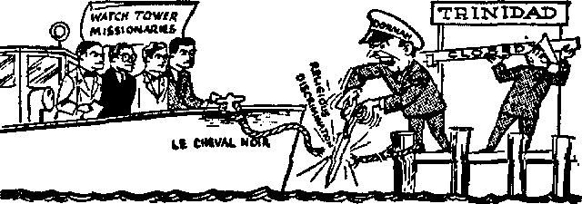
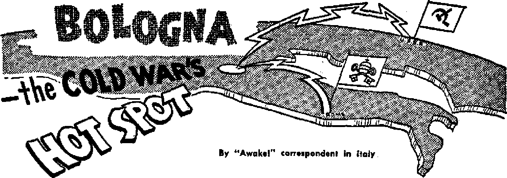
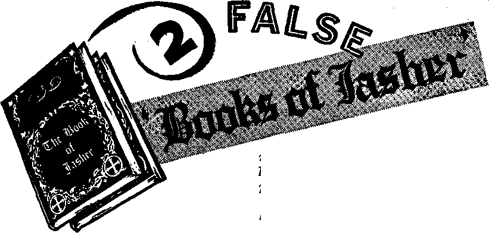

THE CHARITY THAT WINS GOD’S FAVOR Almsgiving is not enough!
Serious Discrimination in Trinidad
An attack on anyone’s religion may make possible the suppression of your own!
Bologna—the Cold War’s Hot Spot The methods Catholics and Communists use to battle for this city’s allegiance
Do Babies Go to Heaven?
A frank answer to a touchy question
AUGUST 22. 1955 semimonthly
THE MISSION OF THIS JOURNAL
N«wv aourotf that art able to kaep you awaka io th* vital isaua* of our time* mart b* unfettered by canJorshfp and selfish interests. “Awake I” has no fttttn. It recognizes foots, faces facte, is free to publish facts. It is not bound by political ambitions or obligations; it is unhampered by advertisers whose toes must not be trodden on; ills unprejudiced by traditional creeds. This journal keeps itself free that it may speak freely to you. Bui tt does not abuse its freedom. It maintains Integrity to truth.
* A wake 1” uses the regular news channels, but Is not dependent on them. Its own correspondents are on all continents, in scores of nations. From ths four corners of ths earth their uncensored, ©n-the-scenes reports come to you through these columns. Thu journal's viewpoint Is not narrow, but is international It is read in many nations, in many languages, by persons of all ages. Through its pages many fields of knowledge pass in review—government, commerce, religion, history, geography, science, social conditions, natural wonders—why, its cover* age is as broad as the earth and as high as the heavens.
"Awake I” pledges itself to righteous principles, to exposing hidden fees and subtle dangers, to championing freedom for all, to comforting mourners and strengthening those disheartened by th* failures of & delinquent world, reflecting sure hope for the establishment of a righteous New World.
Get acquainted with “Awake 1° Keep awake by reading "Awake!*
PUVMflHBD SlMiMONTHLy BT WATCHTOWER BIBLE AND TRACT SOCIETY, INC.
117 Adam* Str Mt Brooklyn 1, N. Y,, U. B. A.
N. H Kb on*, Praidmt Gmixt Buirnt, *?«*■<< ctry
Printing thl* |m*m: %4K,COO
lmuhii ii «*m ttb aatttlM b mM«M: StitiaMiNt—jUrikiMa, Jtatdito, fftod),
OtriMi, Ballndh*. BjeclA, tmfiri).
Hoatbjj—PiiW), Qftak. FartMM».
*C3o* Twlr ndbKripUn w*
AiwrU*. I.S.f 11T Adwi BL. Brwtaly* 1, N.I. 11
AMrtlla, 11 Strwfcr* Id., SlitaUM*. N.8.W. 8/-
40 Inrin A**., Twu 5 OcUrh *1
E*fXM. 1* €fmh Turn*, Uaaoft, W. 1 T/-
Nl* ZhiUi*, Q.f.O Ba SO, w«12ivt«, C 1 17-Mt AM**, rrtMto lac, JDWbfuttl*. TTL T/-
Bitml aa new* dirt IMtUT at IroAklyi, N.I.
itaiM ba mt ta «0oa h rw ew-trf io eoasdlBaca wltii ta purttUe
s<ft> taUwj cr Bauy. >«MitUi»«a *niet** at AnMAr* ft* exntriM »mci bq edea b Ittatri, bj Vuraattoa*] ortr *clj. BwteorVJiw ntaa la dtfaiwt cooitriaa an Mtad Ir local onwj. Iktlaa if apfritki* Iwltb ncmrtl btaak} li anc at l*«rt tie iarara baton iJbacrtptkw ai-plna. CMMa a* M*rm *ta* N*t ta aw tfei ■ij b* upactad iffactln wltola ao* tarttb. Bao* r«r lid aa w*M *■ M*W.
Xt* «f Mlrt I, 1Sft Prtatad h U. I A.
CONTENTS
Big Income but Little Outcome
The Charity That Wins God's Favor
Almsgiving Net Enough
Spiritual Famine Make s Message Urgent 6
"Flagrant Violation of
Freedom of Worship”
Serious Discrimination In Trinidad
rhe Atka and the Penguins
Bologna—the Cold War's Hot Spot
Church, Politics and Flying Friars
The Honey Guide and the Africans
Forced Transfusion Fails
Two False ‘Books of Jasher*
New Atoms for Old
“Your Word Is Truth”
Da Babies Go to Heaven?
Jehovah's Witnesses Preach in All the Earth—Great Britain Do You Know? Watching the World
Brooklyn, N, V , Avgust 22, 1®65
Big Incom* but Little Outcome
A POPULAR fable tells the story of the countrymen who noticed that the mountains were in labor: smoke was coming out of their summits, the earth was quaking at their feet, trees were crashing and huge rocks were tumbling. The men gathered together in one place to see what colossal thing was about to happen. They waited and they waited, but nothing happened. Then suddenly the earth rumbled; a huge gap appeared In the side of the mountains. Anxious to investigate the outcome, the men drew near the gap. A tiny mouse poked its little head out of the gap and ran toward them; the men shouted: “Much outcry but little outcome.” So it is with organized charity today.
During the past year investigators and business bureaus have disclosed wastefulness of funds, Inefficiency and even outright rackets in charity. About $4,500,000,000 a year now cascades from private pockets and purses Into charities in Just one country, the United States. During the last Christmas season, Time magazine reported that 2,000,000 fund-raising hunters were on the prowl. Because most people find it difficult to say “no” to a charity, the income of charities has towered into a mountain. But investigators now find that too much of the “mountain” is overhead.
An example of this is the National Kids Day Foundation. This group collected $3,978,000 in five years, but only about 16 per cent actually reached the foundation. The rest, or 84 per cent, went for “overhead.1’
The Disabled American Veterans used the mails to send people unordered merchandise. From July 1, 1950, to June 30, 1953, this organization received $21,480,-000 from its activity and paid out $17,000,-000 for salaries and promotion costs. Almost $4,000,000 went for lobbying in Washington, and not a cent went for direct aid to needy veterans.—Time, December 28, 1953.
From 1949 to early 1951 the National Cancer Hospital took in “profits” of $630,000. Over two thirds of the contributions went for fund-raising costs. More inefficient yet was the Gold Star Wives Service Foundation, Inc., that collected over $2,500,000 but paid out practically all of it in expenses!
Recently the city of Minneapolis, Minnesota, found that more than half its charity groups were in the questionable category. Said the Minneapolis Star of February 1, 1955: “Last year six rackets parading in the name of charity fleeced residents of Minneapolis. Another 88 solicitations— among the 154 taking place in the city— were of questionable value to their alleged beneficiaries.”
The state of New York has become alartned over the many women who rattle charity boxes in city business districts. Reparting on the words of State Senator Bernard Tompkins, the New York Times of July 13,1954, said: “The women who rattle charity boxes in the theatre district, keeping a large cut of the collections for themselves, were described yesterday as a ‘disgrace* that can’t be eliminated under any existing law. . . . ‘Many of these women are personally offensive,’ Senator Tompkins declared, 'They insult people who won’t drop coins in the boxes? ” And no wonder! For the Times continues: “Senator Tompkins said the women usually got 25 to 30 per cent of the collections for themselves,, with the same amount going to the professional promoter for whom they worked?*
So the "big income but little outcome” is indeed prevalent today. Hence the one who would give must investigate, must be selective. As the following article shows, the outcome is a happy one for all concerned when the Bible’s counsel on giving is followed*
MOST people are willing that to receive temporal
goods from God, but few, very few, are willing to receive spiritual blessings. This was true in Jesus’ day, and it is true today. The frantic search for economic security and material goods has so absorbed the mass of mankind that even poor
people are little conscious of any spiritual need. With such undue emphasis on material goods it is not unusual that the word “charity” is often thought of as the essence of Christianity. But what does the word mean to most people? Usually it is restricted to mere almsgiving. Thus charitable organizations often point to the Bible at 1 Corinthians 13:13, where it says, in the King James Version, that “charity” is greater than hope and faith. This stimulates giving to charity. But is mere almsgiving the charity that helps the poor the most and that wins God’s favor?
It is no secret that the earth could produce abundantly and provide for all living persons so that there need be no poor persons. Recently, the United Nations, by employing a group of experts, examined the possibilities of production to sustain a population much greater than that now existing on the earth. Was the finding favorable? In one way, yes. It showed that misery and starvation could be vanquished. But the report was gloomy, since it predicted that “ignorance, greed, strife, superstition and blind adherence to tradition” will prevent men from accomplishing works that are in their power, “even though the alternatives may be misery and starvation?’ How important, then, is knowledge to combat ignorance and superstition!
Even when the earth does produce an abundance, greed and strife prevent the poor from benefiting. Government^ and
growers tend to destroy or hoard surplus food rather than distribute it to the poor. Yes, plow the cotton under, dump the potatoes, let the wheat rot, wrangle over prices but give none to the poor—the frequent policy of this system of things. Just read the newspapers. For example, the New York Times reported on July 2, 1953: “Israeli growers have destroyed 200 tons of tomatoes rather than accept low prices for them from cannery operators.” At the present time in the United States there is a huge surplus of butter, since the government buys butter to keep the price up. What happens to the surplus butter? Is it distributed to the needy? No, the government has toyed with the idea of selling it to Communist lands at prices lower than a needy American housewife can buy it.
A Penetrating Look at Motives
Charity has become a big business. How is one to respond to the endless and increasing appeals for donations, especially if he wishes to be Christfike? Those who know the Bible’s view on giving can meet the situation with confidence.
How curious are the motives of many people who make charity donations! Like the professional fund-raisers, many givers are interested in charity primarily to help themselves. Though the professional fundraiser is impelled by his commission or salary, those who donate are often compelled to by the fear of stigma. They donate just to please other men, such as giving to charity to keep in the good graces of one’s employer. Others give to charity because they are obsessed by the policy of not giving the government one cent more income tax than they have to. What stimulates many people into giving is the desire for prestige. How well it looks to have one’s name in the newspaper or on certain subscription lists or on a church bulletin board! But Jesus declared:
“Take good care not to practice your righteousness in front of men in order to be observed by them; otherwise you will have no reward with your Father who is in the heavens. Hence when you start making gifts of mercy, do not blow a trumpet ahead of you, just as the hypocrites do in the synagogues and in the streets, that they may be glorified by men. Truly I say to you, They are having their reward in full. But you, when making gifts of mercy, do not let your left hand know what your right is doing, that your gifts of mercy may be in secret; then your Father who is looking on in secret will repay you,” —Matthew 6:1-4, New World Trans.
How clear it is that much of the charity practiced today is hypocritical! The classical meaning of the Greek word from which “hypocrite” is derived means “actor in a play,” hence one who personates characteristics that do not belong to him.
Almsgiving Not Enough
But even when people give to the poor out of sincerity, that is not enough to win God’s favor. It is true that the King James Version says: “Now abideth faith, hope, charity, these three; but the greatest of these is charity.” But this “charity” the
Bible speaks of does not mean almsgiving. How so? Because the Greek word agape, ambiguously tr a n slated “charity,” does not mean almsgiving. One can detect that himself by reading 1 Corinthians 13:3 in the King James Version: “Though I bestow all my goods to feed the poor, and though I give my body to be burned, and have not charity, it profiteth me nothing.” So the charity that pleases
God means much more than merely sharing material things with the poor. Modern Bible translations enlighten us as to what Christ’s apostle originally meant, for they translate the Greek word agape by the word “love.” What a difference that makes! For the word “charity” points primarily to the pocketbook, but the word “love” points primarily to the heart! So an accurate, clear translation of 1 Corinthians 13:13 (New World Trans.) reads: “Now, however, there remain faith, hope, love, these three, but the greatest of these is love."
So the charity that wins God’s favor is love, love that streams forth from one’s heart. Jesus defined just what this love means when he issued the two great commandments of life: “ ‘You must love Jehovah your God with your whole heart and with your whole soul and with your whole mind.’ This is the greatest and first commandment. The second, like it, is this: ‘You must love your neighbor as yourself.’ On these two commandments the whole Law hangs, and the Prophets."—Matthew 22:37-40, New World Trans.
Giving material things may show love for God and love for one’s neighbor, but it is not enough. This is shown by the case of the rich young ruler who wanted to know how to gain everlasting life. Jesus told him: “If you want to be complete, go sell your belongings and give to the poor and you will have treasure in heaven, and come be my follower.” (Matthew 19:21, New World Trans.) The rich man could have given to the poor but that itself was not enough to bring the reward of everlasting life. Jesus said: “Come be my follower.” That meant to engage in the same work that Jesus was doing, the preaching of the good news of the Kingdom. So being Jesus’ follower means giving spiritual blessings to others.
Further showing that love for Jehovah and love for one’s neighbor means more than giving material goods are the words of Christ’s apostle at Hebrews 13:15, 16 (New World Trans.): “Let us always offer to God a sacrifice of praise, that is, the fruit of lips which make public declaration to his name. Moreover, do not forget the doing of good and the sharing of things with others, for with such sacrifices God is well pleased.” Paul’s words, “Let us always offer to God a sacrifice of praise,” show that giving spiritual blessings is of paramount importance.
Why does God count the dispensing of spiritual blessings, the knowledge of his purposes, as of the greatest importance? Because it is not through almsgiving that the unjust, unrighteous conditions on this earth will be permanently corrected. Rather, it is through the bringing in of a new world, a completely new system of things! Thus the apostle Peter declares at 2 Peter 3:13 (New World Trans.) that the hope of faithful Christians Is God’s promise to bring in a “new heavens and a new earth” in which “righteousness is to dwell," The news of God’s new world and how it will come in during this generation after the war of Armageddon is the most urgent message in all the world.
Spiritual Famine Makes Message Urgent
A famine of literal bread may lead to death, but a famine for spiritual food may lead to everlasting destruction. That is another reason why Jesus stressed the spiritual above the material. Indeed, the Son of God did not occupy his time miraculously making gold and silver coins so he could pass them out to beggars. On the contrary, he directed and expended all his efforts toward dispensing the life-giving message of the Kingdom. When Jesus sent a report to the inquiring John the Baptist, Jesus did not say that he had set up soup lines for the poor. No, but he said: “The poor
are having the good news declared to them?’ (Matthew 11:5, New World Trans,) That was the most beneficial chArity.
Today there Is a doubly urgent reason for bringing people spiritual food, instead of concentrating on the material. This is because a spiritual famine has seized Christendom. Myriads of churches there are, yes, but a dearth of spiritual food. The masses know nothing of God’s purpose to bring in a new world. They are spiritually starved. So this famine is “not a famine of bread, nor a thirst for water, but of hearing the words of Jehovah?’—Amos 8:11, Am. Stan, Ver,
The New World society of Jehovah’s witnesses Is interested in helping these spiritually famished people. To do this Jehovah's witnesses spend their material wealth and goods to print Bibles and life-giving Bible literature Jehovah’s witnesses are often criticized because they stress spiritual giving ahead of materia] assistance. But which will help the people more? God’s Word says it is spiritual giving. Jesus did not prophesy that his followers would set up food kitchens and soup lines throughout all the world, but he did foretell that they would give to the people the good news of his kingdom.—Matthew 24:14.
So the message of the new world must be proclaimed in spite of the fact that the masses do not care for spiritual blessings. Oh, they will accept material things all right! Jesus once gave 5,000 people a free meal. The next day the remnant of the crowd that had received a miraculous meal found Jesus at Capernaum, They asked Jesus when he got there, Jesus ignored their question, because he knew they were willing to accept material things but not spiritual. So he said: “Most truly I say to you, You are looking for me, not because you saw signs, but because you ate from the loaves and were satisfied?* (John 6:25, 26, New World Trans.) The crowd failed to see the “sign,” so engrossed were they in receiving temporal goods. Yet those people, by the testimony of all their senses, mouth, eyes, feeling, sight and smell, had the most convincing proof of the reality of a miracle; still they regarded the miracle no farther than It went to satisfying the demands of their appetites! They came back to Jesus all right, but not because they wanted spiritual gifts.
So it would be futile for Jehovah’s wit* nesses to concentrate on material giving; but, above all, it would be unscriptural. Jesus said that those “hungering and thirsting for righteousness” would be filled. It is the privilege of those practicing true charity to fill them with knowledge that not only combats tradition, superstition and ignorance but results in everlasting life in Jehovah's new world. So those who practice true charity do not entrust funds to questionable charity organizations to use in a dubious manner, but they expend their earthly goods directly in spiritual giving; they personally see that the money they give is used, yes and every cent of it, in the most worthwhile work in the world, in a work that helps the people the most. —Matthew 5:6, New World Trans.
Those who practice charity that wins God’s favor do not forget, either, the shai> ing of material things with their needy Christian brothers; nor do they forget kindness and hospitality to strangers. Above all, those who practice the giving that wins God’s favor give unstintingly of their time and energy to help not only the poor but men of all kinds learn that the new world is the only remedy that will permanently eliminate poverty, sickness and even death itself. Happy are those who thus give out of love! For their happiness is great, and the outcome big: "Stay by these things, for by doing this you will save both yourself and those who listen to you?* —1 Timothy 4:16, New World Trans.
'Fkjjraot Viokrtiofl of Freedom of Worship'
By “Awok*!" «Hr»tp«nd*nt In Mexico
Ci /CITIZENS Sent to Jail Because of Reli-'glows Principles." “Lawyers Object to Attitude of Mayor.’’ These were the front-page block-letter headlines on December 1, 1S54, in ha Vos de la Frontera ot Matamoros. Under them was a four-column article reporting the jailing of four of Jehovah’s witnesses of Rio Rico, because, on religious grounds, their children had refused to salute the flag in school. This set off a hot pro and con debate between the very liberal La Vos de. la Frontera on one Bide and Fl Bravo and El Picudo, both very Catholic, on the other.
Hie saluting of the flag, the newspaper report showed, is regarded by the witnesses as an act of reverence or worsliip, and all of such is due only to Jehovah, though due respect for such acts on the part of others and for the flag Itself and for that for which it stands is shown by Jehovah’s witnesses. Freedom cf worship is written Into the Constitution of Mexico, and the mayor showed a very different attitude in this case from that toward other acts of public worship that the paper said recently had been carried on illegally in the city.
This frank defense of Jehovah's witnesses' position offended Catholic quarters that approve the veneration of all kinds of images, emblems, national heroes, institutions, etc. So In an effort to defend the Catholic position a priest who used the pen name “Argos” wrote a long editorial on the worship of the flag, trying to show that the word culto has many different meanings and that it would be no offense to the Catholic conscience to salute the flag and render worship io the many saints, etc. This article directly attacked the stand that had been taken by the other paper. El Picudo also tried io explain away the responsibility of Jehovah’s witnesses to their God. Then the paper said: “The Catholics, because of the teachings of the Church, nave always been proud of being true patriots."
Two days later La Vos de la Frontera made a pointed reply. In a very fair but strong article it showed that on some occasions Catholics had defended the country, but on other occasions had betrayed it, and that not all Catholics are patriots and not all patriots are Catholics. It cited chapter and verse to prove this, saying: “It Is also true that those that burned the feet and later murdered Cuauhtemoc were Catholics, so were the clergy that excommunicated the leaders of our independence, so were those that went to Europe to bring Maximilian and the French a rmy, so were the Polkos, a black fifth column in the American intervention and lastly, so were those who applauded the assassination of Madero by Huerta and paid the 'pwnrdioa blancas’ [White Guards] that murdered the farmers and laborers who a few years ago fought for a more Just social system." Thus, being a Catholic does not in itself mean that one is a loyal citizen, or that he is disloyal a fact that completely refuted the priest’s claim.
These newspaper comments opened the way for Jehovah’s witnesses to give a very good witness to the newspaper editors and reporters who had become interested in the stand they had taken.
What happened to the brothers who were falsely arrested ? A lawyer who had defended Jehovah's witnesses on other occasions came to represent them here, and he, entered the courtroom just as the judge was angrily reprimanding these witnesses. Having obtained a decree of liberty from superior authorities, he Interrupted the judge to tel! the witnesses that they were free. They could go home and send their children to school and tell the school officials that everything had been straightened out, and their proof that It had been was that they were at liberty and the children were present. The school authorities should educate the children. Jetting those who desired to salute the flag do so, but they had no authority to try to force others to do it in violation cf conscience.
Everywhere the conversation centered around the stand taken by Jehovah's wit-nesses. This attack cn their right to freedom of worship only served to quicken the separating work that Jehovah has purposed lor this day—dividing the people into two classes: those who favor His work and his servants, and those who oppose, them. Even the acts of opposers serve io bring that work to a completion, hastening the day when will eome into complete existence a righteous new world entirely dedicated to the worship, veneration, love and respect of the only true God and universal Sovereign, Jehovah.
SERIOUS rCTCiN-
DISCRIM'^ in
WZHAT 1S lh= Cerent HnTOTMTT
W danger injeligious dis- M x »* -"1
crimination? The danger is that while it.
may be the other man’s religion that is discriminated against today, barriers that guarantee your own freedom are weakening, and your religion may be discriminated against tomorrow. Certainly you would not want that to happen.. So the matter of religious liberty is of great importance to you.
Yet the basic rights of freedom of speech and religion are threatened throughout great areas of the world today. The Communists’ attack on religious liberty is well known. But it is shocking to learn that religious discrimination is being practiced, not just in communistic and totalitarian lands, but even in parts of the freedomloving British empire. ’‘Impossible!” you say? Well, take a careful look at recent events in the tiny British West Indian island of Trinidad.
It was on September 28, 1954, that the Motor Vessel Le Cheval \'mr (also known as the "Faith’”) arrived in its home port of Port-of-Spain, Trinidad, where it had been registered with the Registrar of Shipping, Trinidad and Tobago, since November 9, 1953. Aboard were the crew of four, plus five passengers who were resident Watch Tower missionaries.
The immigration officer who boarded the boat quickly dispatched the passengers, endorsing their passports as permanent residents, and turned his attention to the crew. Each was given a written order signed by the acting governor, Maurice Dorman, saying they were “undesirable visitors” and therefore were prohibited from landing. They were ordered by the immigration officer to leave the colony not later than October 5, 1954, on the same vessel by which they had arrived. In other words, the vessel was ordered from its home port!
Why the Ban?
The only explanation given for such an act was reference to a portion of the immigration ordinance that says that "any person who from information or advice which in the opinion of the Governor in Council is reliable information or advice is deemed by the Governor in Council to be an undesirable inhabitant of or visitor to the Colony” is prohibited as an immigrant. No explanation was given and appeal is not possible.
Two of the banned missionaries are Englishmen, a third is from Canada and the fourth is from the United States. This is the sixth year that they have been doing missionary work from the ship in the Caribbean islands, from the Bahamas to the Grenadines inclusive. They have concentrated especially on the smaller, hard-to-get-at islands and have distributed hundreds of Bibles and Bible helps among the residents of those islands. They have literally walked all over these islands making house-to-house visitations on the inhabitants, no matter how humble their dwelling place, besides conducting public Bible lectures and classes of instruction in the Bible, and serving on the platform of assemblies of Jehovah’s witnesses in many places.'

That their visits are greatly appreciated by the people is evidenced by the well-supported meetings they conduct. On none of the forty-odd different islands they have visited in the past six years has any opposition been experienced from the government officials, but the government representatives have always extended a cordial welcome to these missionaries in recognition of the good work they have been doing among the people.
Since no public charge of any improper action has been made against the crew members of this missionary boat, what can we assume is the cause of their being banned from TrinidatJ? There is no other conclusion but that the government is practicing flagrant religious discrimination. Certainly this does not conform to the British principle of freedom.
By banning the Watch Tower missionaries, the government seeks to pass on which religions it wants the people to follow and to prevent the public from examining religious teaching that it may not at the moment like. That not all are treated equally is shown by the frequent arrival of missionaries of other faiths. Regularly the public press tells of the arrival of this or that missionary to carry on some religious activity for a period of time, as, for example, this sample from the Trinidad Guardian of October 15, 1954: “Nazarene Missionary to Speak on India Tonight”
Jehovah’s witnesses have vigorously protested this discrimination against them. A leaflet, approximately eight by eleven inches in size and printed on both sides, was prepared and distributed, presenting the facts of this situation to the people. It strongly protested: “Jehovah’s witnesses deplore this unjust action that has been committed and they strongly protest this discriminatory action by Government. We protest the stigma that is bound to follow such action and the improper speculation that is the result of it.”
“Detrimental to Public Order"?
A member of the Legislative Council, the Hon, S. C. Maharaj, required a written reply from the acting colonial secretary to questions about the reasons for the prohibition against these missionaries. The answer was: “The Government decided last year that no further representatives of the Society should be permitted to enter the Colony, since experience has shown that its teachings can be detrimental to public order and security.”
How could this possibly be the case? A large native group has worked with these Watch Tower missionaries until now there are forty-two congregations on the islands of Trinidad anti Tobago, Their lives and activities are strictly peaceable and orderly; they are not to be found in the courts charged with some of the ever-mounting crimes of violence, theft, etc. In no sense of the word could they be considered criminals.
It is certainly inconsistent to insinuate by prohibition that the four missionaries of De Cheval Noir are engaged in some kind of underhanded activity likely to stir up discontent among different classes of people in Trinidad. They are engaged in the same kind of work that Jehovah’s witnesses have been doing in Trinidad and Tobago and all the other Caribbean islands since 1913. Since these peaceful Christians have caused no trouble, it can only be assumed that prejudice and discrimination are the basis for this action.
Whether it realizes it or not, by imposing such a ban on these Christians the government is imitating the action taken against Jehovah’s witnesses by the Communists, because Jehovah’s witnesses* Christian activity is banned in the entire Communist bloc of nations. Their officials, along with thousands of their Christian brothers, are serving long prison terms in such places as Czechoslovakia, Poland, Eastern Zone of Germany, and the like, and they are receiving from the Communists exactly the same ill treatment that was meted out to them by the Nazis and Fascists during the years 1933-1945.
Trinidad has closed its doors to four Christian men, three of whom are British subjects, who have done nothing wrong but have devoted their time to Christian educational activity on behalf of God’s kingdom by Christ. But even if public order were disturbed (which it has not been), then it is not the Christian missionaries who would be at fault. They preach the good news of God’s Word in a peaceful way. Those who wish to listen to their message can do so. Those who do not want to listen do not have to do so. Any tumult is caused by those who do not wish to listen and who stir up disorder just to keep others from listening.
It was because of “public order” that Pilate let Jesus be killed, washing his hands of the shameful affair. He considered “order” to be more important than principle. But a far better example was set by the town clerk or city recorder at Ephesus who respected justice. He told the people who were shouting against Paul that they were the ones causing disorder, and that if they had a case against Paul it should be handled property and legally in open court or at a lawful assembly. (Matthew 27:24; Acts 19:23-41) The point of all this? It is that even if disorder did occur, the proper course would not be to expel the men who are in the right but to restrain the disorderly, riotous elements who are in the wrong.
But, since even this situation has not arisen in Trinidad, the banning of these missionaries, with the impression being left in the people’s mind that there must be something wrong with Jehovah’s Witnesses, is an open and flagrant case of religious discrimination. And it should be remembered by all that discrimination is a serious malady. As a small germ can cause the death of a formerly vigorous man, so a tiny germ of legal intolerance, if allowed to grow, can infect a whole nation or an entire world. If it is someone else’s religion whose rights are being restricted today, who is to say it will not be your own religion tomorrow?
What will the outcome be? No one knows, but Jehovah’s witnesses are continuing to press for their God-given right of free worship. The vast majority of people are in sympathy with such freedoms, for they realize that these freedoms must be maintained for all religions if we are to be sure that they will be maintained for any religion. It is hoped that the people of Trinidad will let their wishes on this matter be known, and that the new governor, who was to have assumed office after this writing, will prove himself to be a true lover of freedom and justice for all. If, as it is hoped, he makes a quick end to such discrimination, Awake! readers may look forward to being advised of that fact.
w
all living things," wrote the ship’s correspondent, "they are perhaps the most patent victims
HEN the United States icebreaker Atka visited the Antarctic regions it was met by colonies of inquisitive penguins. "Of
of curiosity. They would hurry over to look at the ship, then run clumsily along the ice trying to keep up. Others ahead lined up to stare.” And, of course, the Atka crew stared right back. It was a feast of mutually satisfying curiosity; for man the royal banquet came when the emperor penguins put in their appearance.
The emperor is truly a magnftcent creature. Standing three and a half feet tall, the emperor is the tallest of penguins. They weigh up to ninety pounds. Colored black and white in the usual tuxedo pattern of penguins, emperors have gold patches on the sides of their heads. At a distance they can easily be mistaken for men.
•$> One day while the Atka was scanning the coast line, where no man is known to have set foot, the ship sighted through the mist the form of "explorers.” Quickly the Atka changed its course. Toward the explorers churned the icebreaker. Explorers they were all right—seven of the most inquisitive emperor penguins man has ever seen!
At times the explorations of penguins were interrupted by the icebreaker as it crashed its way through ice floes on which Ad^lie penguins were lined. Writes the ship’s correspondent: "The Atka split a floe bisecting one such line of black and white kibitzers. They peered in bewilderment at the widening gap between brother and sister, man and wife. Finally those of the minority fell on their bellies and, using their webbed feet like outboard motors, tobogganed across the slush to the other group. When last seen they were facing each other in little . groups nodding their heads as though exchanging expressions of indignation." But climbing on ice floes is no hardship for penguins. Describing their method of climbing onto an ice floe several feet above water, the correspondent aboard the Atka wrote: "They dive deep and line up in what aviators call echelon formation. Swimming at full speed, they shoot out of the water vertically, alongside the floe, so that each one lands on the ice a moment after the other and a few Inches farther along the floe. The startled shipboard viewer sees a barren ice floe at one moment and then—flip, flip, flip, flip, flip—there are five penguins standing in a row.”
'j’ Once when the Atka pushed her bow onto low ice, the ship called on her most agile sailors to capture some penguins. On tiptoe the sailors stalked the birds, which would walk away looking back over their shoulders. Then they would break out in a waddling run. If they really wanted to get away, they began tobogganing. When penguins toboggan across the ice, they flop on their belly and slide along, pushing with their webb feet and steering with their flipperlike wings. A tobogganing penguin travels about twice as fast as a man can run on ice. *$■ When the journey was over and the Atka steamed into Buenos Aires, all except* eleven aboard were happy to see the sun-baked streets. Those exceptions were the captive penguins, seven emperors and four Ad&ies, which drooped In the heat of the late-summer sun. The birds were rushed by plane to the United States.
The ship's correspondent wrote that the penguins "are perhaps the most patent victims of curiosity.” To satisfy their own they let man get too close and were captured. To satisfy man's they were brought to America and caged, and as a result eight of them, at this writing, are dead. One Ad^lie still lives in the Washington, D.C., zoo; two emperors survive in the Bronx zoo in New York city.

ONE of communism’s most direct assaults on the free world west of the iron curtain is now being made in Italy, In Italy’s most recent national election the Communist party with its allies captured 35 per cent of the votes. Local elections that have taken place since then show that, while opposition is stiffening, communism is slowly but steadily making further headway. A “cold” but bitter war is on for the domination of this land.
For an on-the-spot survey of the weapons and tactics used in this cold war, come with us to Bologna, one of the major cities in northern Italy, the very stronghold of Italian communism. In addition to being a stronghold of commuhism, Bologna is also the center of the Catholic counterattack, headed by its determined archbishop Giacomo Cardinal Lercaro, who, by the way, is considered to be one of the most likely successors to Pope Pius XII.
Why Communism?
Let us first answer the question why Italy, with its profound religious tradition, the very cradle of Catholicism, has proved to be such a fertile ground for the Communist ideology. The reasons are several and rather complex, but some of them seem to be the following.
First, despite the fact that Italy is nominally 99.7 per cent Catholic, only a small percentage take their religion seriously. Or to put it in the words of Cardinal Ler-caro: “Italy is less Catholic than one might think, for the most part merely formal allegiance without conviction is involved.” Communism is also favored by the traditional anticlericalism of many Italians. As for Bologna, it was once part of the temporal domain of the pope, regarding which a monk of the Order of the Servants of Mary had this to say: “The Papal States continued to rule during the last century and their authoritarianism created strong anti-clerical feelings—now taken over by the communists.” And the Cqmere deUa Sera of Milan, Italy, stated last November 6 that three centuries of papal rule is still the cause of some of the antipathy against the priests today.
Also, when about a hundred years ago the newly formed Italian state introduced liberal measures, such as freedom of the press, religion and speech, the secularization of education, the annexation of the papal states, and so curtailed the influence of the church, the Vatican bitterly opposed the liberal Italian government, thereby only fanning the flames of anticlericalism. Only 1929 brought reconciliation between the church and the new Fascist Italian government, when Mussolini and Cardinal Pacelli signed the famous Lateran treaty or concordat. It gave the “Holy See” sov-erelgnty over Vatican City, made the Roman Catholic religion “the only religion of the State/* granted state subsidy to the clergy and religious orders, and prohibited books, press and films against the church. In turn the Italian bishops had to swear fidelity to the Fascist state.—Article 20 of the Concordat.
This brings us to a second reason why many Italians have lost faith in the church: her attitude toward Fascism and the war. It is true that a small minority of priests did not agree with Fascism. But many Italians still remember how the church as such openly supported and hailed Fascism, Pius XI himself calling Mussolini “the man sent by Providence/* and Cardinal Gasparri declaring in September, 1932: “The Fascist government of Italy is the only exception to the political anarchy of governments the world over.” Many Italians who participated in the Ethiopian war and World War H will tell you how fervently chaplains and higher clergy prayed for the victory of the Italian troops and how, at the end of the daily mass, the priests offered a special prayer for the salvation of "the King and the Duce [Mussolini]/* On the other hand, the leftist propaganda uses extensively the fact that the Communists had taken the leadership of the antiFascist resistance movement during the war.
Another major cause of the Communist advance is the economic unbalance, the extreme differences between rich and poor. “There is high chronic unemployment, widespread poverty and misery, tax inequities, a failure on the part of many big business men and landowners to meet their social obligations and give their workers a fair share of the proceeds of production. There has also been a certain amount of corruption in the political field/* explained the New York Times, March 19, 1954. All this is skillfully exploited by a brilliantly organized Communist party, and so quite a few vote Communist, not so much because of liking communism, but to express thefr discontent with present conditions. In fact, the opinion of the man in the street is often similar to what an office worker told the writer: "I am not much interested in politics. I am interested in providing decent food and housing for my family. ... The Church has never been on the side of the poor.”
As a fourth factor in the Communist advance, a clever and insidious propaganda by press, posters, propagandists, etc., has greatly contributed to bringing the workers and even a number of intellectuals into the orbit of Communist thinking. Communism plays the role of universal savior. It promises everything to everybody. Peace! freedom! justice! work! are the very fighting words of Italian communism. Principles are often sacrificed for tactical advantage. For example, as communism tries to win Italy's Catholic vote it bypasses the fact that communism, according to the definition of Marx and Lenin, is squarely atheistic. Thus party leader Paimiro Togliatti said in April, 1945, that "knowingly, after mature reflection/* his party has "opened the doors even to the believers.*’
Church, Politics and Flying Friars
The Catholic Church has, of course, not been indifferent toward the growth of communism and has tried various means to stem the red tide. First the clergy have used all their influence to strengthen the Christian Democratic party. In some rural communities the very party headquarters are situated at the parish house. The church has said that it is "the strict duty of all citizen^ men and women, to take part in the elections/* and even nuns who had vowed never to leave the convent have gone to the polls to vote as the church wished in Italy’s elections.
On July 1,1949, the "Holy Office” provided for the excommunication of Catholics who voluntarily were professing, defending and propagandizing communism. However, it seems that this excommunication decree is not applied very often or consistently. There is, for example, one parish near Bologna where the priest was very strict and refused to marry couples that were known to be communistic. So they got married at a neighboring parish whose priest, as they said, was glad to get the extra money.
The ever-active cardinal of Bologna has devised a new weapon against communism: the Frati Volanti, or Flying Friars, This squad of some twenty monks has received special training for discussions with Communists. When there is a Communist meeting in Bologna or the surrounding countryside, they will challenge the speaker to debate in order to disprove the Communist claims. Or, with the aid of their sound equipment and transportable Madonna shrine, they will arrange for open-air lectures in the “Red” sections of the city, followed by the showing of religious and comic films for the children. It is claimed that through the activity of these Flying Friars several dozen Communists have fumed in their party card. To others, however, these methods seem to have a contrary effect, and many times one hears comments like: “It was already enough when the priests talked politics in church, but now they even come out into the streets and squares to do their propaganda.”
“Bread and Games* Modern Version
It is remembered that in ancient Rome, in order to secure their election, the candidates had to provide “bread and games” to the citizens. Similarly, in the present struggle for power in Italy it is often not so much the superiority of a certain ideology that decides, but rather what immediate material advantages or sometimes even what entertainments a certain party provides.
Bologna’s Communist mayor, Giuseppe Dozza, has made it a big point of prestige to give the city an efficient government It has to be admitted that the city’s postwar rebuilding program has been swift (one third of Bologna was destroyed during the war) and that many new schools and 1,400 apartments have been constructed by the city. However, Cardinal Lercaro did not intend to let Dozza’s prestige remain unchallenged, and wanted to show that the church, too, was interested in housing. So he took the initiative for a privately financed housing project of some eighty apartments, called “the village of the newly wed” because it is destined to be inhabited by young couples who have not yet found a home. The Catholic press widely publicized this project and the cardinal archbishop received a welfare award as ‘*the city’s greatest benefactor.” Those from the left commented that the church had never cared if people were living in shacks or slums in the past; if they were doing so now, it would just be for propaganda purposes.
Since his arrival In Bologna several years ago, the new cardinal has used various means to increase his popularity: he makes frequent visits to factories, slums and fields; he opened up his palace to fourteen orphans and allows the schoolboys to play football in its courtyard. And whenever there is an event in his diocese, whether it be the inauguration of an exhibition, of an art show or of an electrified railroad track, the cardinal will be there.
Thus, both sides strive to increase their popularity. Soon after his arrival in Bologna the cardinal announced a children’s outdoor carnival; Mayor Dozza organized for the same day a children’s masked bah. It snowed that day, so while the mayor
triumphantly watched his several hundred young Bolognans wearing their red masks, the cardinal sat alone in his palace. Let-caro did not capitulate, however, and had his carnival on another day with several thousand in attendance.
Religious pageants also have been used > to increase public interest, and the spectacular finale of the consecration ceremony of the Basilica di San Petronio last fall con' sfsted of a brilliant fireworks show. To tlje sound of. deafening detonations the facade of the church was transformed into a wall of fire, color and flaming crosses. When the smoke had cleared away, an immense picture of the city’s patron saint, San Petronio, appeared, the many thousands assembled in Piazza Maggiore acclaiming enthusiastically.
“Father” Evaristo da Camiana of nearby Sassuolo has gone even farther in finding original methods of fighting communism. Regularly he engages in bowling and card games with Communists, not for the sake of filling the church treasury as religions elsewhere sometimes do, but with a different object. At a workers’ recreation hall he posted this sign: “Game of Bowling & pf Cards. _Who Loses the Game Must Listen to Three Masses. P.S. If the loser belongs to the P.C. [Communist party] he has to hear them on his knees.”
Just as Catholicism, on becoming the state religion of ancient Rome, freely incorporated various pagan festivals into its traditions, giving them a “Christian” cloak, so the Italian Communists saw the influence such holidays and festivals have upon the people, and now they tod organise them throughout the towns and cities, usually dedicating them to the major Communist newspaper, UUnita. The success of these festivals is undeniable,.whether from the propagandistic or financial viewpoint
An Italian magazine comments as follows: “The struggle with the Catholic
Church for the conquest of the souls through the senses and imagination, which is the substance of every popular feast, has become fiercer in the last few years, both parties improving their weapons. The Communists have adopted all the traditional characteristics of the country feast, with a few intelligent transpositions. For example, they expose instead of the picture of the patron saint, those of Lenin and Togliatti; instead of the sermon there is the speech of an important politician. The rest is the same: dance bands or records, broadcast by loud-speakers to make up all the noise that the people think necessary to having a good time, then fancy illuminations, peanuts, soft drinks and above all money collection.”
So the fight continues. The "revolutionary” methods of Cardinal Lercaro may secure a few more votes for the Christian Democratic party. But it is doubtful whether they will produce real Christians. To accomplish this, not religious traditions, festivals and fireworks, but rather a sound understanding of the book of Christianity, the Bible, is needed. Unfortunately, especially among the working class of people who are particularly exposed to Communist propaganda, the Bible is practically an unknown book.
It is interesting, however, that when Jehovah’s witnesses started their Bible educational work recently in “Red” Bologna, they found quite a few Communists who were anxious to get to know more about the truths the Bible contains, and the hope it outlines. Yes, even in Bologna, this hot spot in the present cold war, Bible truth is freeing people from the fallacy of failing political schemes like communism, and from false religious traditions as well. As Jes .s promised, it is the truth of his words with their sure hope of life that really makes men free.—John 8:32.
The Honey Guide and the Africans
By “Awake/” correspondent in Northern Rhodesia
THIS is the story of probably the most astonishing partnership in all nature. True, you may have heard of strange part’ nerships, such as those between two differ’ ent kinds of bisects, sea creatures or deni’ zens of the forest. And you may be familiar with pets that have a close relationship with man, such as the pussy eat that begs man for food or the dog that pesters man to go hunting. But where is there a creature of the wild that reverses this order and, completely free from the direction of man, takes the initiative in coaxing its human neighbors into making a journey to an otherwise unobtainable source of food? Yes, where is there a creature of the wild that, while making people help get its dinner. helps man so much in return?
Unique, then, is the partnei'ship between the honey guide and the Africans. What prompts this partnership between bird and man? A common love for that luscious sweetness called honey.
This honey-craving bird is called by different names in each African tribe’s language, but thejiame “the honey bird” or “the honey guide” is recognized by all. Several species of honey guides there are, but it is the greater honey guide that has rightly earned the reputation as a scout extraordinary. No sweet-noted warbler is he. Yet those who understand the meaning of his incessant chatter can find no sweeter sound. Neither is the honey guide a brightly colored, eyecatching bird; in fact, he is rather drab, being brownish-gray and whitish on the breast. Nor is the honey guide impressive for size; he is a trifle smaller than the ‘American robin. But to the African of the “bush" this little feathered fellow is a delight to the eye. His music is sweetness to the soul. And no wonder! For this bird acts as a most willing guide to direct any who care to follow him to a concealed bees’ nest and its hidden treasure of liquid gold-
not to mention an unwearied
and inex-
Now the honey guide is not only a scout, he is also somewhat of a connoisseur of fine groceries. He has a cultivated tongue that appreciates the finest of honeys. But the caviar of this feathered connoisseur’s diet is a succulent dish comprised of tender young bees not yet able to fly. Of course, any bird that is fastidious about its bill of fare must be expected to exert strenuous efforts to make a living; and any bird that chooses man as a partner must have unflagging and indomitable perseverance,
haustible amount of patience. It Should be said for the honey guide, in this regard, that he does his best.
Being a sharp-eyed dweller of the forests, the honey guide has marvelous opportunities to discover wild bees’ nests. Even the most cleverly concealed ones do not escape his penetrating eye. After finding a nest, all the honey guide needs to do is to find a man who is willing to move in, push the bees out and open up the hive. So, jotting down the location of the nest somewhere in his mind, the honey guide flits off in his quest for a human partner.
Attracting and Guiding the Partner
Once a man is sighted this honey-minded bird flutters from branch to branch in the neighboring trees and sets up a chattering noise, much like an annoyed squirrel. Not that this feathered pioneer is displeased— far from it—he is just'exuberant in his anticipation of a toothsome lunch, and this is his way of calling man’s attention to his rather undistinguished self. Should the passer-by be unimpressed, the honey guide waxes bolder and alights on the branches of a tree within a few feet of the traveler’s head and exclaims in a tone of voice that could well give competition to a blue jay. The honey guide persists in his chatter until he makes some man see his point of view.
When a person gives some indication that he is willing to enter into a partnership, such as the Africans do by responding with a low musical whistle, the bird eagerly begins his part of the bargain. Elying now in a certain direction, the honey guide hops from one tree to another, chattering excitedly as he progresses. The constant chatter serves as encouragement to his human partner who, in the jungles of Africa, probably needs it. Though his tongue by now may be dripping, the honey guide shows remarkable patience.- he never flies so far ahead that there is danger of losing his human partner. If his follower seems a bit hesitant, because the going is rough, this persevering bird is always ready to fly back and try to whip up flagging interest.
What happens, though, if the man quits the partnership and leaves the honey guide in tile lurch? Naturally, this taxes the bird’s patience to the limit. Yet if this scout extraordinary has knowledge of another hive somewhere else in the jungle, he may fly back to the man and offer to point out this other nest. So the honey guide is not inflexible but will change his plans to please man. Yet if the bird has no knowledge of other hives, the partnership is terminated and the bird remains behind.
The End of the Journey
Happy is the honey guide when a man follows him to the end of the journey. Now the exultant bird flies low over the site of the hidden hive and the human partner takes over, while the honey guide, with his work finished, takes a ringside seat in a nearby tree, waiting with dripping tongue the moment for the division of the liquid loot.
After his ally has finished the job of breaking through the tree and extracting the hidden treasure, the honey guide is eager for his payment in making the enterprise a success. So the Africans place Off erings of honey for their hard-working scout. As soofi as man departs, the bird, now in a pinnacle of gastronomic ecstasy, feasts on drops of honey and the cuisine of his heart’s delight, toothsome young bees.
Probably you wonder what has happened to the bees. They are still buzzing around, furiously resentful. But the honey guide is not at all perturbed or impressed by the fury of the sting-carrying buzzing bombers. For the honey guide is protected by a built-in sting-proof vest: an unusually thick, tough skin.
Not always, though, does the honey guide enjoy a banquet after his day’s work. A few tribes of Africans will not only take all the honey, but will deliberately carry off the tender young bees and bury them. This is a gastronomic crime! Just what the honey guide thinks of ingrates like this we can only imagine. As is to be expected, the Africans cheat the bird because of a superstition: they believe that if a bird is allowed to eat his fill he will never again act as a guide to more honey. Still we need not fee] sad for hoodwinked honey guides, because the wrong done them is more than compensated for by other tribes that have still another superstition: they believe that unless the bird is well rewarded he will exact vengeance next time by leading his followers, not to a beehive, but to a large snake! This causes these Africans to give the honey guide treatment that is more than generous.
It should not be concluded that the initiative for forming this singular partnership always rests with the bird. The Africans sometimes search for the bird seeking his aid just as eagerly as the bird desires theirs. To assist them in finding a honey guide, some Africans have contrived special whistles or bird callers made from gourds. If a honey guide is in the neighborhood, these attract his attention. This testifies, incidentally, to the strong faith the Africans have in the honey guide’s ability to search out hives, remember the exact location and lead a man to it unerringly.
At one time this unique partnership between man and bird prevailed over the greater part of all Africa, It was, Cor Instance, an essential activity of the Kikuyu. But now times are changing. Money is introduced, and white man's ways prevail. Now many Africans buy their sweets Instead of securing them from nature. But wherever the partnership still exists, it is truly a marvel to behold.
C Some judges insist that the state has the right to protect a clilld irom its parents when those parents fall to give the child what orthodox medical practice considers proper medical care. True, but when the issue of religious scruples Is involved and the medical care stipulated is a calculated risk, just to what extent is the state justified in forcing the opinion of certain doctors on children?
C, Pertinent to this question are two newspaper clippings that were received by Awake! magazine- not long ago. The first was taken from the front page of the Fresno, California, Bee, December 31, 1954, and In large letters told, “Judge Orders Transfusion for Tot as Parents Object.'' It went on to report how the doctors of a certain hospital had recommended blood transfusions for a month-old baby boy and how a judge had signed an order permitting them to give the transfusions over the objection of the parents. “One of the attending physicians, who asked not to be identified [why?], said Jonathan has had two operations fcr a congenital intestinal obstruction.’’ It was claimed that death would be almost certain without the blood transfusion, although it was also admitted that “we cannot be certain the child will live with the transfusion.”
C, Some ten days later, the Los Angeles, California, Mirror, January 10, 1955, carried the following item: “Boy Gets Blood Despite Dad’s P'.ea, Dies Anyway. Fresno, Jan. 10- -Donald Corey, father of month-old boy who died In Valley Children’s Hospital here, said today he has 'no ill feelings' toward doctors who gave the child blood transfusions over his objections.’’
<1 Not only is it obvious that the blood transfusion did not help, but there Is no doctor who could dogmatically say whether the blood transfusion was a contributing factor to the infant's death or not. This being so, it makes such conspiracy between organized medicine and the courts all the more reprehensible.

False Version Number One
In the late summer of 1954, a cer-
URING recent years two totally different false versions of the "Book of Jasher" have been circulating. While the Bible, at Joshua 10:13.and 2 Samuel 1:18, refers to an ancient writing called in the King James Version the “book of Jasher” (more accurately rendered in most modem translations as “Jashar”), the fact remains that both of the modem versions that are put out under this name were long ago proved to be literary forgeries. Yet, modem commercially-minded publishers have resurrected them to exploit a gullible public. Would you like to know the facts about these books?'
First, what does the Bible indicate about this “book of Jashar”? The two places where it is mentioned deal with the experience of Joshua at Gibeon and the lament of David. Hence, it is quite reasonably thought that the original “book of Jashar” must have been a collection of songs, poems, anecdotes or little writings that were of considerable Hebrew historic interest and thus desired for frequent quotation. However, the collection was not inspired though well circulated. These songs and poems were apparently gathered and pre-served over a period of several generations and then became lost. No manuscripts of any sort of this ancient collection have been found to this day to prove this.
tain hitherto-unheard-of publisher, by,the high-sounding name of “Bible Corporation of America” of Philadelphia, fostered fullpage advertisements in certain national trade journals in the United States making a “gold mine” appeal to selfish salesmen. “Attention!!! crew managers . . . district managers. Learn about our Special Plan of How you can earn a minimum of $18,500 fast!”*
Another salesmen’s magazine carried a full-page advertisement with streaming, inch-high letters shouting to the ears of the credulous: “Missing Bible found!” We quote the following in their own style of capitalization:
“The most startling discovery in 2000 years. Attention everyone! Atten-
TI0N ALL FAITHS. ALL THINKERS. PART OF YOUR HERITAGE HAS BEEN FOUND. NOTHING, absolutely nothing, since the beginning of time, has rocked the entire world as has the discovery of this missing book of the Bible. [Note that it is no longer a "missing Bible found,” but has here become merely a “missing book of the Bible.”] Stop! Think! Do you realize what you have just read? Just imagine, yes, just imagine , . , easy now, sit back,
i Opportunity, Issue of September, 1954, page 77. recatch your breath ... and please do stop shaking. Yes, you know it, and we’d like to say in all sincerity and realism ‘you have just found a fortune!’ Never . . , never has such a dream item ever been presented to salesmen, dealers, distributors, mail order houses, etc. This is truly an item packed with sales prestige, honor and GIANT PROFITS. REMEMBER . . . this lost Book of Jasher hinges directly onto the best seller in the world—our Holy Bible.” The advertisement went on to make other false claims, including calling this a “valuable limited first edition,” and saying: “After 2000 years the first authentic translation of the missing Book of Jasher has been released to the public,... It was only at this time when the priceless Book of Jasher was finally translated into English and is now being released to the public, by the Bible Corporation of America.”15
What a filthy, exaggerated, lying appeal to attach to God’s sacred pure word of truth! It is an outrage to claim this false work is part of our divine heritage and to attach such a commercial project onto the Bible’s circulation!
The Facts
A Spanish Jew of the thirteenth century anonymously produced in Hebrew a writing that he misrepresented as the “Book of Jasher.” Later this was published in Hebrew at Venice, Italy, in 1625,c Finally, in 1840, a stereotyped translation was made into English and published in New York under the direction of M. M. Noah.d The fact that the “Printer’s Preface” (p. xxi) of the Bible Corporation of America’s edition states that this writing in the Hebrew was available in Italy A.D. 1613 gives the lie to their claim that theirs is
b Specialty Salesman, issue of September, 1954, page 25. e A Dictionary o! the Bible, by J. Hastings, Volume II, page 551.
a McClintock and Strong’s Cyclopedia, Volume IV, pages 787, 788. .
AUGUST 22, 1955
“the most startling discovery in 2000 years.”
The internal evidence of Noah’s book demonstrates what a fabulous fabrication this thirteenth-century forgery is. First of all, it is not a collection of poems or songs as the Bible itself indicates it should be. Rather, it is a fantastic series of narratives purporting to give evidence from Adam’s time down to after Joshua’s death, thus trying to be an authentic document covering some 2,570 years. This itself condemns the writing as not reliable, not inspired by God. Why? Because Bible writers recorded historic events only of their immediate day. Joshua wrote of events that occurred in his lifetime, the Hebrew prophets did the same and likewise did the apostles and Greek Scripture writers. Where material extended beyond their immediate lifetime, incorporations were made from existing reliable records and so indicated. For example, Moses compiled Genesis from eleven eyewitness documents and honestly left internal evidence of these sources. (Genesis 2:4, New World Trans., footnote a) But the forged “Book of Jasher” gives no such honest evidence to be considered authentic in covering such a sweep of time. Rather, the forger just carries on with impossible, imaginary statements that are wholly inconsistent with the true Bible.
To manuscript authorities the Hebrew manuscript itself bears abundant testimony through its period-style of Hebrew characters that it. is a false writing of the middle ages. For example, Hebrew writings of the early B.C. period spell out the tetragrammaton which is the divine name later transliterated through the Latin into English as “Jehovah.” Hebrew writings of the late B.C. and early A.D. periods sometimes used two yods (”) or three yods (''» and ’*') to refer to the tetragrammaton. But Writings of the middle ages around the thirteenth and four-
21
teenth centuries merely used an accented heh, ('nJ. The fact that the Hebrew text from which the M. M. Noah and the Bible Corporation of America have published their identical English version used this latter style ('fl) for the divine naiue proves conclusively again that this is a forgery of the middle ages and that it is ridiculous to claim that any such text could possibly be of a B.C. period origin.
A further evidence against this book, and demonstrating that it is a product of the mind of Satan, is its claim that Nimrod was a blessed servant of God. It claims that Nimrod was given the garments of skin that God made for Adam and his wife, and says: “And Nimrod became strong when he put on the garments, and God gave him might and strength. And the Lord delivered all the enemies of his brethren in his hands, and God prospered him from time to time in his battles, and he reigned upon the earth.” (BCA Version, Jasher 7:24, 29, 30, 32) What a gross contradiction of the true Biblical account that reliably records the fact that Nimrod was an avowed enemy of Jehovah God!—Genesis 10:8, 9, New World Trans.
Doubly Wicked
Not only would it be bad to republish and circulate M. M. Noah’s English translation of this fraud today, but to reprint Noah’s nineteenth-century publication under a different name as the Bible Corporation of America has done, falsely claiming it to be a twentieth-century discovery of theirs, is doubly wicked. What proof is there that this is a fraud? Pages from M. M. Noah’s publication, dated New York, April, 1839, and from the 1954 copyrighted book of the Bible Corporation of America are word-for-word identical, except that, to withhold the source and date of the new falsely so-called “discovery,” the last paragraph of the book’s preface, plus M. M.
Noah’s name and the nineteenth-century date of this book’s earlier publication have been omitted. Yet, on the rest of this page, the words, type style and layout are identical, and even the nineteenth-century archaic word “subjoin” is used, proving that this so-called <Book of Jasher found after 2000 years’ is not a new book but has been copied through some sort of photographic process from the nineteenth-century volume.
As a further example, a photostat of page three from M. M. Noah’s book, when compared with the same page of the Bible Corporation of America’s text, shows that they are word-for-word identical. The same words are italicized, an old-fashioned question mark and a broken or crooked single dagger sign are identical in the printing of both volumes, indicating that the “new” one is taken from the older, apparently through the process of photo-engraving printing. Further, the Hebrew character “1” is called by the out-of-date designation “vau” instead of “waw” as today, and the nineteenth-century archaic word “dissembled” is used. If this were a twentiethcentury translation as they claim, then they would have used “kept secret” or “lied.” Thus, there is every evidence that this version of the false “Book of Jasher” is merely a twentieth-century printing in a nineteenth-century dress palmed off to the public as a twentieth-century masterpiece.
Reported to Government Authorities
In January, 1955, this evil practice was brought to the attention of the United States Federal Trade Commission in Washington, D.C., as being an apparent violation of the Federal Trade Act. After receiving photostats that prove the facts stated in the two paragraphs above, the Federal Trade Commission replied on March 29: “The practice referred to has been brought to the attention of the Bible Corporation of America. No further action is contemplated at this time since we are informed that the sale of the ‘Book of Jasher’ has been discontinued. If you have any information to the contrary, the matter will be given appropriate further consideration. Your interest and cooperation in calling this matter to our attention are appreciated.”
So, instead of the Bible Corporation of America rocking the world by their nineteenth-century discovery, they were rocked into silence.
False Version Number Two
The second false version of the "Book of Jasher” is printed and circulated by the Rosicrucian Order through their "The Rosicrucian Supply Bureau” of San Jose, California. On their title page they openly claim that their published volume is a photographic reproduction of the original English translation printed in Bristol, England, in 1829. By way of "Preliminary Explanation” they write: "The Book of Jasher is one of the long-lost, and long-sought-for, sacred books which should have been included among the other books of the Bible but which was not because the original manuscript could not be located. In order that some of the mystery regarding the Book of Jasher might be removed, and, furthermore, for the benefit of those students of the Bible who sincerely desire to read another record of the events that are 1 w
presented in the Old Testament, we have thought it well to reproduce the Book of Jasher in its original English translation as given to the world by the man who claims to have found it and preserved it. .,, This, therefore, gives us a truly photographic reproduction of each page of the translation of the original book of Alculn.”
What is the general judgment by Bible authorities as to this supposed version of the "Book of Jasher”?
"A clumsy forgery in English, which first appeared in 1751 under the title of ‘the Book of Jasher/ deserves notice solely for the unmerited success with which it was palmed off upon the public.”* "In 1751 there appeared a volume which professed to be an English translation of The Book of Jasher, alleged to have been found, but the production was an impudent forgery.”1 The Book of Jasher “was first secretly printed at Bristol, and published in London in 1751 by an infidel type-founder of Bristol named Jacob Hive, who was its real author- It i$ entitled ‘The Book of Jasher, translated into English from the Hebrew by Alcuin of Britain? This book was noticed in the Monthly Review for December, 1751, which describes it as ‘a palpable piece of contrivance, intended to impose upon the credulous and ignorant, to sap the credit of the books of Moses, and to blacken the character of Moses himself.’
This Hive-AJcuin literary forgery was exposed for the first time in a pamphlet published in England in 1778 by Rowe-Mores.h And in 1833 this literary fraud was again exposed in a pamphlet published by the king’s official Bible printers Ayres Spottiswoode, London, in a treatise entitled "Bibliographical Notes on the Book of Jasher,” by Thomas Hartwell Horne.
The historical facts as they are ascertainable indicate that Alcuin was a York-shireman who lived In the middle of the eighth century. Being a clergyman of the Roman Catholic Church, his writings and learning were only in Latin and not in Hebrew. He never traveled in Persia, nor
• A Dictionary of the Bible, by Wm. Smith, 18S3, Volume I, page 934.
f Dictionary of the Bible, Westminster Press, 1944, page 283.
c SfcOlintQaJc and Strong Cyclopaedia, Volume IV. page 788.
h Zn Introduction to the Critical Study and Knowledge of ths Holy Scriptures, by T, H. Horne, 1807, Volume II, pages B3, 64 of the Appendix,
i Available at New York public library, NYPL *PD. J.Y.i
in Palestine for that matter, to have discovered such a manuscript, as Hive claimed Alcuin had done? It was a pure invention on Dive’s part.
Internal evidences from the Rosicrucian’s publication of the “Book of Jasher” further conclusively demonstrate its falsity. It is written as a collection of narratives rather than a collection of poems and songs as the Bible indicates this work might be. It is filled with many inconsistencies and often contradicts the sacred record of the Bible.
The facts are overwhelming that these two false versions of the so-called "Book of Jasher” are forgeries, fradulent and wholly impossible. They do not contain the thinking of the living God. Rather, they contain false teachings and dangerous thoughts that make void the living Word of Jehovah. They contain the mystical teachings and thinking of false worship, and therefore of Satan and his demons. The true Christian will refuse to be exploited by these false works. The Rosicrucians advertise their book as containing “the inspired words of suppressed mysticism revealed,” but do not tell the public that these words must be inspired by God’s archenemy, the Devil. Jehovah’s witnesses will follow the inspired counsel of the apostle Paul by utterly rejecting any so-called spiritual morsel that is found on the table of Satan and his demons, for: “You cannot be partaking of ‘the table of Jehovah’ and the table of demons.”—1 Corinthians 10:21, New World Trans.
HEW moms FOR OLD
■g How wonderfully made is the human body! Almost yearly man learns something as-toundlngly new about himself. One of the newest revelations is that each twelve months the human body replaces almost all the old atoms with new ones. This was discovered by the use of radioactive isotopes in physiological Investigations. What is that? Just this: Scientists have found that almost all elements have atoms of different weights. An element having atoms of varying weights is said to have isotopes. Now radioactive isotopes can be prepared from almost any element. Introduced into a substance the radioactive isotopes will follow the nonradioactive atoms of their particular element. The radioactive isotope is plainly marked and “tagged’'; its presence and course can be detected and traced by instruments. Thus these "tagged atoms” can be used as tracers or “spies” to reveal what happens to the elements in the food we eat.
Reporting to the Smithsonian Institution on the latest tests, Dr. Paul C. Aebersold, director of the Isotopes Division of the Atomic Energy Commission, says: “Medical men used to think of the human body as an engine that takes in food, air, and water mainly as fuel to keep running on. Only a small part was thought to go for replacement of engine wear. Investigations with isotopes have demonstrated that the body Instead is much more like a very fluid military regiment which may retain its size, form, and composition even though the individuals in it are continually changing, joining up, being transferred from post to post, promoted oy demoted, acting as reserves, and finally departing after varying lengths of service.
Tg "Tracer studies show that the atomic turnover in our bodies is quite rapid and quite complete. In a week or two half the sodium atoms will be replaced by other sodium atoms. The case is similar for hydrogen and phosphorus. Even half of the carbon atoms will be replaced in a month or two. And so the story goes for nearly all the elements. ... In a year approximately 98 per cent of the atoms in us now will be replaced by other atoms that we take in in our air, food, and drink.” —Science Digest, December, 1954.
Do Babies Go to Heaven?
EVERY pagan religion has its heaven of some kind or other* And the hundreds of millions of pagan worshipers sincerely believe that they will go there after death. Included in this great number that occupy the pagan heavens ar6 millions of children. Christendom, too, teaches that heaven is the destiny of all righteous creatures and that millions of her worshipers will some day inhabit it* A Protestant publication states: "When a baby dies, you may be sure that the dear Saviour takes the little one safe home to Heaven at once.” "Who knows, dear reader/’ remarks this religious writer, "but that God took your baby home to Heaven in order to turn your heart to Heaven also?” Such blaming of God for the death of youngsters finds support in devilish superstitions, but not in the Bible.
The Bible has an entirely different message for the people. It is one of love and hope to parents. The Bible is specific as to who and how many will be rewarded with heavenly life, giving the exact number. Instead of millions of earth’s inhabitants inheriting heavenly life, the Bible says there will be just a "little flock”; that "few are the ones” finding the way to life at all, because strict and rigid requirements must be met before anyone can gain such life. It was only after years of faithful, fulltime ministry that Paul was able to say: "I have fought the right fight, I have run the course to the finish, I have observed the faith. From this time on there is reserved for me the crown of righteousness, which the Lord, the righteous judge, will give me as a reward in that day, yet not only to me, but also to all those who have loved his manifestation.”—Luke 12:32; Matthew 7:13, 14; 2 Timothy 4:7, 8, New World Trans.
Now, in all sincerity, babes do not follow Christ Jesus as did Paul or any of the apostles. How could they? They are too young and tender of age. They have not come to an accurate knowledge of God and Christ Jesus to decide intelligently on important matters such as life and death. They have neither agreed nor disagreed to do God’s will. Requirements for life in heaven with Christ Jesus demand that one be wholly and unreservedly dedicated to Jehovah God, and that dedication should be symbolized by water immersion. These preliminary requirements in themselves would exclude all babes from entering despite their so-called “innocence/*
Infant baptism is not authorized by God; therefore it is without meaning or merit. It is only after a child comes to the age of accountability, understanding and responsibility that he can intelligently make a dedication of his life to God and symbolize that dedication by being immersed in water as Jesus was. One must intelligently worship God before ever being admitted to the heavenly courts. Said Jesus: "Not everyone saying to me, ‘Master, Master/ will enter into the kingdom of the heavens, but the one doing the will of my Father who is in the heavens will.”—Matthew 7:21, New World Trans.; Luke 3:2123.
If babes do not go to heaven at death, where, then, do they go? The Bible answers that they go to the grave and there await the resurrection. Note God’s words regarding the hope of children who were killed by Herod’s soldiers at Bethlehem: "Thus saith Jehovah: A voice is heard in Ramah,
lamentation, and bitter weeping, Rachel weeping for her children; she refuseth to be comforted for her children, because they are not [they are dead]. Thus saith Jehovah: Refrain thy voice from weeping, and thine eyes from tears; for thy work shall be rewarded, saith Jehovah; and they shall come again from the land of the enemy [death]. And there is hope for thy latter end, saith Jehovah; and thy children shall come again to their own border [this earth where they died].” In other words, God promised Rachel that her children would be brought back to life again right here on the earth in the resurrection, and that Rachel would have the opportunity to live with them.—Jeremiah 31:15-17, Am. Stan. Ver.; Matthew 2:16-18; 1 Corinthians 15:26.
Nowhere do the Scriptures teach that newborn babes go to heaven at death or that unbaptized babes go to hell. Such religious teaching is absolutely without basis or fact. When Jesus raised Lazarus, who had been dead four days, from the dead, Lazarus did not say he had been in heaven during those four days. Jesus said very plainly to his disciples: “Lazarus has died.” When Lazarus came to life again, he came to life right here upon the earth. In the same way will the millions of babies that have died and gone to the grave be resurrected and be given a chance to live forever right here upon the earth. The earth, not heaven, is the home of man. ‘‘For thus saith Jehovah that created the heavens, the God that formed the earth and made it, that established it and created it not a waste, that formed it to be inhabited: I am Jehovah; and there is. none else.” These little ones that will be brought back will take part in inhabiting the earth.—John 11:14, New World Trans.; Isaiah 45:18, Am. Stan. Ver.
Does anyone go to heaven? Oh yes, the Bible teaches that some do. And it tells us how many will inherit heavenly life: “And I saw, and look! the Lamb standing upon the mount Zion, and with him a hundred and forty-four thousand having his name and the name of his Father written on their foreheads.” “And no one was able to master that song but the hundred and forty-four thousand, who have been purchased from the earth.” Only 144,000, then, and no more, are to be purchased from the earth to heavenly life. These first come to an accurate knowledge of God’s Word of truth, then separate themselves from this world; they are tried and tested, and finally approved by God, even as Jesus Christ was. Babies have not this opportunity. Heaven is open to the mature follower of Christ, “those called and chosen and faithful." These, however, must be meek and teachable as little children. That is why Jesus said: “Let the young children come to me and do not try to stop them. For the kingdom of God belongs to such kind of persons." It is of “such kind” that the Kingdom is made up.—Revelation 14:1-3; 7:4-8; 17:14; 2:10; Luke 18:16, New World Trans.
After Christ's resurrection and his ascension into heaven, he began the selection of those who would make up the 144,000. Are these selected merely to get them into heaven? No; they are taken out from among the peoples of the nations of earth to be witnesses among men to the name of Jehovah and to his kingdom. While on earth these must show forth Jehovah’s praises. Proving faithful, these will in the resurrection be with Christ in heaven.
Does that mean that only 144,000 will gain life? No. That is the number only to inherit heavenly life. The rest of mankind who will live will gain life right here on earth. Jesus spoke of having other sheep not of this heavenly fold. Their hope is to gain everlasting life on earth under the heavenly kingdom.—Matthew 6:19-21; John 10:16.
Great Britain
Great Britain is roughly twice the size of New York state. But there are four times ag many people in Britain as there are in the state of New York, the over-all density being 550 persons to the square mile. Statisticians report that the population has doubled in the past hundred years, and they survey the next hundred with melancholy eyes.
However, the British people generally do not share the pessimism of those who pore over the vital statistics. They go cn living and giving life in the same old way with that composed assurance that is typical of the Briton, This characteristic of taking things as they come, though, can easily develop into a condition of apathy and indifference. And, for a considerable proportion of the British people, it certainly has. For one reason or another the majority are content to settle back into the matronly arms of the welfare state. Declining Rome’s cry, “Bread and drcuses!” finds its modern counterpart in Britain’s, “Tea and football!’’
This apathy is nowhere more manifest than in the field of religion. Once a citadel of Protestantism, Britain has become its mausoleum. Here the clergy bemoan the loss of their farmer authority and Influence. But their entreaties, their threats, even their enticements of amusements and food seem unable to halt the drift of the people. The doctrines of the clergy are, to the better educated, an affront to intelligence. Whereas their course of action in finance, politics and war fe, to the less educated, so obviously inconsistent and hypocritical. Is there any wonder, then, that less than thirteen per cent of the adults in Britain go to church?
At this point, let us bring into the picture the body of people known as Jehovah's witnesses. How do they fare? Are they suffering from the rot that is eating the inside out of orthodoxy? Reports show that in 1938 there were just under 5,000 witnesses in Britain. Now there are more than 29,000 reporting as active preachers of the good news. So it is dear that their message is reaching men of good will and striking a responsive chord in them. The advance of Jehovah's witnesses makes it obvious that the empty pews in the churches are more the fault of the clergy and not so much the fault of the people after all. One clergyman, trying to explain away Jehovah's witnesses, concluded a tirade against them in his parish paper with this paragraph:
“If you ask me how it is that so many people have been led away by them, the answer (or part of it) is that the Witnesses count on every member being a propagandist,for the party; they protest strongly against the devilries of modem warfare, they denounce the Inequalities of and extravagances of modem life, and their equalitarian convictions impelled them to be Socialists even In the early days when few religious people were members of that party. And they have an unrivalled knowledge of the Bible—they can always quote chapter and verse for their opinions.” Thia admission coming from a clergyman is surely noteworthy. How deceitful, though, to infer that Jehovah’s witnesses are involved In politics when everyone knows that they do not even vote!
A good deal of favorable newspaper publicity was received as a result of an assembly held by Jehovah’s witnesses in Leicester. The clergy of the town were most unhappy about that, as is evident from tneir letters to the press on the subject, One, a Methodist parson, said in the Leicester Chronicle: ‘'They are worshipers of a tribal deity, though He was known by another name. It disturbs me to think that Leicester people succumb so easily to the morbid ideas that the sect presents. It shows (a) that the churches of Leicester are failing to present the reasonableness and sanity of the teaching of Jesus to the community within and without the church; (b) that this city is so secular and content with itself that it has not the interest or courage to stand on its own pagan feet 'and resist the injection of a religious opiate, the Jehovah's witness.” In contrast with the “reverend” shepherd’s bad-tempered outburst against his own sheep, Jehovah’s witnesses had a happy time in the city taking the cheerful message of the new world to the people. ‘And the common people heard them gladly?
A lady in one of London's congregations had formerly been a president of the local women's guild, an organization to encourage and train women to take a fuller part in public life. After a course of study with Jehovah’s witnesses she wanted to belong to the New World society; so she withdrew from her public activities and devoted her energies to the preaching work. Another guild member upon whom she called one day arranged for her to address a meeting of the guild on the subject: “Jehovah’s Witnesses and the Bible?' The reason for the invitation was that her former colleagues wondered why such a prominent person among them had changed her views so completely. This turned into a series of lectures until it was halted by pressure from a Communist section of the guild. This witness says she now realizes how futile everything is in comparison with working for Jehovah’s new world of righteousness, It is this work that is filling the vacuum created by the failure of Christendom to rise to the occasion and really announce Jehovah’s King, Christ Jesus.
KNOW?
-
• Why, even when the earth produces an abundance, the poor fail to benefit? P. 4, H. * What is the more accurate meaning of the Bible word for '‘charity"? P. 5, U4.
• Why four of 'Jehovah’s witnesses were ■jailedon religious grounds in Mexico? P. 8,111. • How the government of Trinidad has sought to pass on which religions it wants people to follow? P, .10, 113.
-
• How penguins get on ice floes? P. i2t
-
• Why Italy has proved such a fertile ground for the Communists? P. 13, 114.
-
• How the Catholic Church tries to counteract Communist influence in Bologna? P, 15, 111.
-
• What bird satisfies its hunger by striking a bnsfness partnership with man? P. $2, • What the original “book of Jashar" was? P. 20, If 2.
-
• What disproves the first false “Book of Jasher”? P. 21, U3.
-
• What view Bible authorities have taken toward the second false “Book of Jasher”? P. 23,
-
• How often the body replaces its old atoms with new ones? P. 24, 113, »
-
• Whether babfes go to heaven? P. 2 5,
-
• What the real hope is for babies that have died? P. 25, 1[6.
-
• What makes it clear who is responsible for empty pews in Britain’s churches? P, 27, U4.
Italy'# New Government
<$> As minister of agriculture between 1946 and 1950 in the cabinet of Premier de Gasperi, Antonio Segnl ordered the expropriation of large estates. He put through nearly all of Italy's land redistribution laws. So Segnl had no one to blame but himself when bis own large Sar&ruan estate vtefi broken up. But his devotion to reform brought the 64-year-old Sardinian to the top of the Italian political ladder- When Premier Marlo Scelba resigned, President Giovanni Gronchi asked Segni to form a new government. Segnl set about canvassing the three small center parties (Social Democrats with 19 seats, the Republicans with 5 and the Liberals with 14) in hopes of re-creating the coalition that has prevailed for two years with a majority of less than 20 votes. But first Segfli had to placate the bickering factions inside his own Christian Democrat party. After thirteen days of interregnurp, Italy had a new premier. Segni managed to put together again a four-party, middle-of-the-road coalition. He is the first Sardinian ever to achieve the premiership of united Italy.
Bunn&s U Nu Visits the U.S.
Premier U Nu, who has headed the Burmese government for the past eleven years, recently made a visit to the U.S. In New York the premier was impressed by the Empire State Building: "It Is a building of my childhood dreams." The premier added: “The height of this great building is really bewildering to me.” In Washington the Burmese leader
officialdom, including President Elsenhower. Back in New York the premier commented that “most of the responsible people" in Washington “are not against the entry of Peiping into the United Nations.” Astonished Representative James Richards, chairman of the House Foreign Affairs Committee, said that If U Nu’s observation was correct, there must be “a lot of Irresponsible people in Washington.” The next day the State Department said “there has been no change” in policy. U Nu, qualifying his statement, said his impression was based on the assumption that the Reds would “behave.”
The School Bin Blots
<$> Last March some 100,000 Roman Catholics staged a riotous demonstration in Brussels, Belgium, to protest the Socialist-Liberal government’s school bill. The bill was passed in June by the Belgian Lower House in the longest session in th£ country's parliamentary
history. It gives the state the right to create “official non-denominationaT schools wherever they are needed. It also reduces the national payment to Catholic schools from $74,000,000 to $64,000,000. In July the second big demonstration against the school bill broke out. This time it was in Ltege. Some 10,000 marching Catholics shouted, “Down with Collard”—the Socialist minister at tn&tructinn. wbnsA
name is on the school bill. Afterward the opposition began its own demonstration. Taunts erupted. They became sharper, tempers grew hotter and fist fights broke out. For several hours police were busy breaking up brawls over the school bill, the final enactment of which is now a foregone conclusion.
Diem Smashes Gang No. 2
<$> president Eisenhower has called the situation in South Vietnam “strange and inexplicable." Its strangeness stems largely from the part played by the religious sects with private armies. One of the sects is Hoa Hao. It claims to be a sect of reformed Buddhists and takes its name from the village of its founder, a man who first came into prominence as a sorcerer. The Hoa Hao numbers about 500,000. Its private army, about 15,000 strong, was originally armed by the Japanese. In the post-
Ban, fijnh. favored Communist Ho Chi Minh. But the Vietminh murdered the sect’s founder, whereupon they came to terms with the French, promising their loyalty in return for autonomy in certain areas. The sect became increasingly engaged in worldly affairs until it finally deteriorated into a virtual terrorist gang. Premier Diem,, who had just finished smashing the Binh Xuyen gang, determined that the Hoa Hao also had to go. In June Diem launched his offensive* It was a combined naval, air and ground operation. It was so successful that more than a thousand of the Hoa Hao laid down their arms and the array commander fled to the hills. In July Diem declared that the nationalist army had finally won total victory over the Hoa Hao religious sect.
India: Filling the Jails
<$. Sikhism is a monotheistic religion incorporating elements of Hinduism, Islam and other religions. Its 6,000,000 adherents are led by Tara Singh, a firm advocate for a Punjabispeaking state with the Sikhs dominating. Said Sikh Singh: "When the Moslems can get Pakistan, and the Hindus India, why not a Sikhs' Slkhl-stan?" Several months ago the Indian government banned the shouting of slogans for a Sikh state- But Tara Singh defied the ban and was arrested. He instructed his followers to practice peaceful disobedience. Since then, all over the Punjab, bearded Sikhs have stood before policemen and shouted slogans, courting arrest. Almost 7,000 have been jailed. Just recently Tara Singh marked his seventy-first birthday; he spent it in jail. As a birthday present, 271 Sikhs volunteered to get themselves arrested. The police obliged them and gave assurances that there is room for many more in their spacious jails.
Freedom-threatening Advice
In early 1955 the U.S. First Army headquarters issued a pamphlet on "How to Spot a Communist.” The "telltale" signs: "a distinct vocabulary” of such words as "book-burning, colonialism, reactionary, oppressive, materialist.” Also "the Communist, when criticizing, goes all out In condemning." As to "controversial subjects" Communistfl prefer, the pamphlet listed "violation of civil rights, racial or religious discrimination, immigration laws, anti-subversive legislation, . . . the military budget, and *peace.’ ” Commented the New York Timea; "If army or police agencies really took seriously these so-called 'distinguishing marks’ of Communist leanings, it is perfectly obvious that any citizen who opened his mouth in protest against virtually any phase or facet of political or economic life risks being listed as a possible Communist.” Not unexpectedly, the American Civil Liberties Union asked the defense department to withdraw the advice. First Army headquarters recently announced the pamphlet's withdrawal.
“Deplorable” Newspapers
<$> In July the hundredth birthday party of some of Britain's august newspapers took place, but not all was happiness. A cause for grave concern, say the century-old newspapers, is the grim lowering of journalistic standards among the mass circulation press of daily and Sunday newspapers. In an editorial marking its 100th anniversary, the Manchester Guardian said: "It is permissible to wonder whether, in spite of all the immense progress In technique, much of English journalism today is not losing the moral purpose that until recently it took for granted.” The Times of London, most authoritative and famous of British newspapers, said: "The race for mammoth circulations has led in some cases to a disgraceful lowering of values. ... The baser instincts are being pandered to, not only in lasciviousness—the influence of this can be overrated—but in social attitudes and in conduct as well.” The Times commented frigidly that it was "deplorable” that some of the "worst examples should be classed as newspapers at all.”
Spain: Law on Mixed Marriages
In Spain Roman Catholic canon law forbids mixed marriages except in special cases.
. Because of this the U.S. last November signed the draft of the controversial "procedural agreement regulating religious welfare," which would place U.S. personnel tn Spain under Roman Catholic canon law. Now a recent court ruling is believed to have eliminated plans for the agreement regulating mixed marriages among U.S. citizens tn Spain. On June 18 the Madrid Court of Appeals handed down a decl-sion, the effect of which grants Spaniards who are baptized Roman Catholics the right to contract civil marriage with non-Catholics. In July it was learned that the Spanish government had accepted the court's decision. The new ruling, however, provides that baptized Catholics must prove that they have “either abandoned or separated themselves from the church,” or that "they belong to another faith.”
Death In Formation
<$> One' day in July, 12 jet fighter planes of the Portuguese air force were flying from Ota air base to an air force show at Ciombra. The weather was foggy. As the fast-flying planes neared 1,500-foot-high Sierra dos Carvalhos, the mountain remained invisible. Almost simultaneously eight Jets crashed into the mountain, the blast and flames of the crashes carrying aloft to four fellow pilots flying top cover for the formation. These four emerged unscathed, but the pilots of the eight planes were all killed. Debris of the planes scattered over a square mile of the mountainside. The crash wiped out almost 20 per cent of Portugal's jet strength and was the worst in the country’s air force history.
Russia’s Jet Transport
Among the planes that flew at the annua! air parade in July over Tushino airport on the outskirts of Moscow was one ’that surprised the West. This was a four-engine jet transport plane apparently suitable for both military and civilian use. Air attaches of foreign governments, viewing a whistling procession of military aircraft, received their surprise when the very last plane appeared. It was the jet transport, a plane they had never seen before. It was an original design resembling the British Comet. In Washington a former air force secretary, Senator Stuart Symington, commented that the ILS- had loet a degree of the air supremacy America once thought it had. The U.S. has yet to make a flight test of its first jet airliner.
The 50,000th Crossing
The first commercial flight across the North Atlantic took place only sixteen years ago. A Pan American World Alr-ways plane made the trip In Just over twenty-six and a half hours. On June 28 a 353-mile-an-hour Pan American DC*7B took off from New York on a nonstop flight to Paris in eleven hours. It was the line's 50,000th crossing of the Atlantic. The 50,000th flight meant that the airline has carried 2,021,483 passengers across the Atlantic. Harold Gray, executive vice-president of Pan American, commented on the event: “We're dispatching thirty times as many flights a week as we did in 1939; airplanes are more than twice as fast and carry twice as many people. Against a prewar total of 300 people flown a month, we now transport 17,000, or more than fifty-six times as many.”
Movies on Tape?
<$> One of today's marvels is the audio tape recorder. Its principle is the transformation of sound into a succession of electronic impulses that disturb magnetic particles on the tape. For some time now the Bing Crosby Enterprises, Inc., has been working on a video tape recorder that would work on the same principle as the «audio tape. In July it was announced that the video tape recorder is about 80 per cent perfected. A demonstration of video tape showed that the pictures still suffer from blurring overcast and smears, but at times they were startling in their color fidelity. The halfinch tape has five separate “tracks”: three tracks for the three primary colors, a track to carry synchronizing signal information and a sound track. With the commercial Introduction of video tape recorders, believed to be about a year away, it will be possible to take movies without the use of film. It would revolutionize the motion-picture Industry, since directors could shoot a scene and then see “the tape” about as quickly as one plays back an audio tape.
Jehovah’s Witnesses
The New World Society
This is the title of a new book about Jehovah's witnesses. There are already several books about this religious group, but this is the first one that fairly and objectively gives the facts, uncolored, unbiased. It has 172 pages of regular text, plus 57 pages of appendix material. It covers the history, activity and doctrines of Jehovah's witnesses, and is libera I iy sprinkled with scores of photographs excellently reproduced on heavy coated paper. Published by Vantage Press and written by Marley Cole in newsy reporter style, it is available at $2.95 a copy. Get it at your local bookstore, or send to the Watchtower, 117 Adams Street, Brooklyn 1, N.Y.
World Conquest Soon
—by God *s Kingdom
World governments come and go. Which will survive the present struggle for supremacy? The Bible answer is world conquest soon—by God's kingdom. Read the stirring and heart-cheering message delivered by N. H. Knorr, president of the Watchtower Society, to thousands of persons at the "Triumphant Kingdom1’ Assemblies of Jehovah's Witnesses. It will firmly establish your hope in the kingdom of Jehovah God, which is now moving triumphantly to complete conquest of this war-torn world in our generation. World Conquest Soon—by God's Kingdom, 5c a copy; 3 for 10c; 7 for 25c. Order from Watchtower, 117 Adams Street, Brooklyn 1, N.Y.
.. — - ___
All that was hoped for
—and more!
=VOLUME II
Containing the books First Samuel to Esther
Volume II of the New World Translation of the Hebrew Scriptures is now available. It is a fitting addition to the growing library of canonical books of the Sacred Scriptures brought into the modem English by the New World Translation Committee. If you are not yet acquainted with the scholarly work of this committee, then you will delight in a fresh new translation. You will more fully appreciate that the Word of Jehovah God is a living understandable Word for those who want to call upon his name, that they may be saved to life in the new world. Rush the coupon below with a contribution of only $1.50 for your copy, today!
U/aieAtowet //7 fitoMyn /, A/,
I am enclosing $1.50, Please send me a copy of the New World Translation of the Hebrew Scriptures, Vol. II.
Street and Number or Route and Box ....... „.........................
Name.............................................-..................-...............................
32
AWAKE!